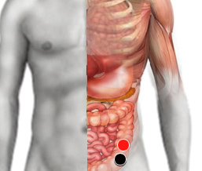

Cancer de vejiga
contraciego - contraciego
esófago - vejiga (I)
prostata - recto
escápula - escápula
uretra - uretero

Generalidades:
La medicina alopática no ha identificado los agentes causantes de este tipo de cáncer. Para el biomagnetismo uno de los principales agentes causantes es la Bordetella pertusis, Histoplasma capsulatum, también se puede probar la presencia de virus como el virus del papiloma. Ciertos desórdenes genéticos también pueden detonar la enfermedad como son alteraciones en el cromosoma 9,